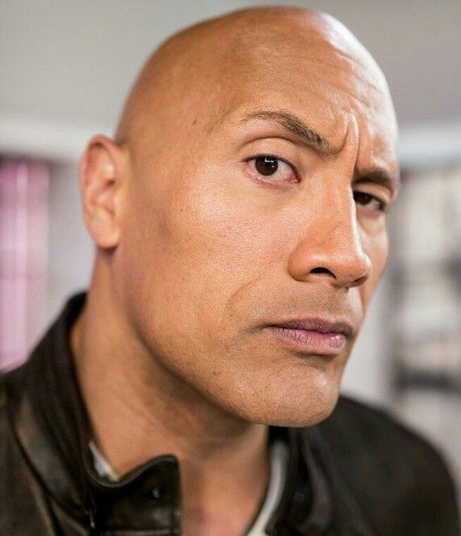
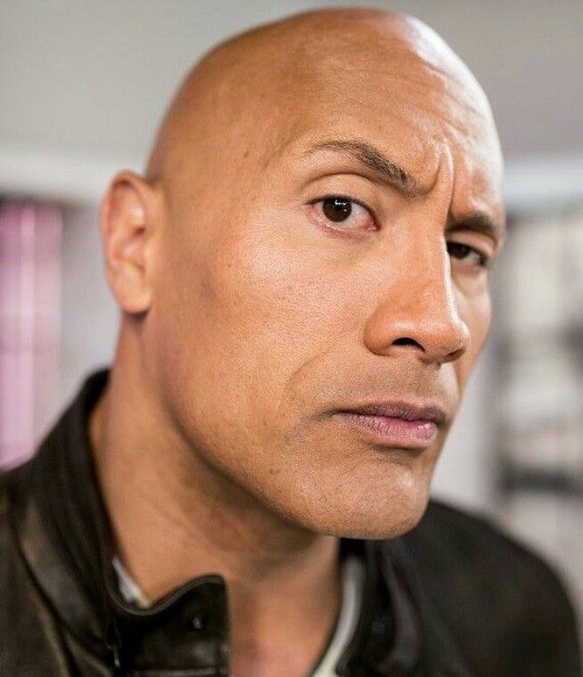

Carecas com relevância
Este são os 5 Cavalheiros da Calvície
Relevâcia dos carecas na sociedade
Embora possa parecer trivial à primeira vista, a presença dos carecas na sociedade desempenha um papel significativo em diversos aspectos. Longe de ser apenas uma questão estética, a calvície tem uma relevância que vai além da aparência física e influencia várias esferas da vida social.
A comunidade careca é um exemplo poderoso de autoaceitação e empoderamento. Muitos indivíduos carecas abraçam sua condição com confiança e orgulho, desafiando os padrões convencionais de beleza e redefinindo o que significa ser atraente. Essa atitude inspira outros a aceitarem suas próprias imperfeições e a celebrarem sua singularidade.
Estudos demonstram que pessoas carecas são frequentemente percebidas como mais maduras, confiáveis e competentes no ambiente de trabalho. A calvície pode transmitir uma imagem de maturidade e profissionalismo, o que pode ser vantajoso em diversas carreiras e situações profissionais.
Serão citados aqui os 5 cavaleiros da calvície:
- Julius
- Cr7 Careca
- Saitama
- The Rock
- Damon Wayans
"La ele, receba e bora bill"
Dwayne Johnson
Curiosidades sobre estas cabeças lisas, brilhantes e pensantes:
- Julius é o maior economista mundial, sendo referencia para paulo guedes e temido pelo mr xandao
- Cr7 Careca morou na Bahia sem ser reconhecido por ter o real visual careca
- Saitama deixou seu visual careca por ser fã de Dwayne Johnson
- The Rock é fã de Saitama e irmão mais novo de Dwayne Johnson
- Damon Wayans é irmão de Marlon Wayans,Keenen Wayans e Shawn Wayans, todos atores famosos
"Essa citação me custou 0,89 cents"
Julius
Os 5 Cavalheiros da Calvície

 

Mais Informações:
Você pode saber mais sobre calvície clicando aqui: